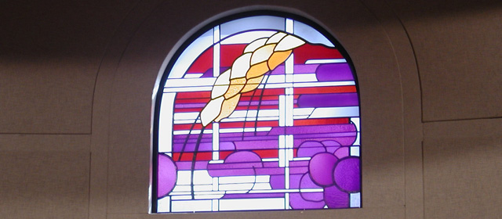

Where All Are Welcome
Call the Parish office : (916) 985-2065
Contact Us

St. John The Baptist Catholic Church.
307 Montrose Drive,
Folsom, CA 95630
Phone
(916) 985-2065
Fax
(916) 985-7579
parishoffice@stjohnsfolsom.org
Office Hours
8:30 AM - 4:30 PM